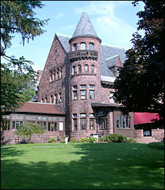

|
The reception will be held at Belhurst Castle located down the street from Zion Lutheran Church with a cocktail hour beginning at 4:30PM on the lawn overlooking Seneca Lake. Music during the Cocktail Hour will be provided by Jared Fankhauser who is a close friend to Dan and Amanda.
Dinner and dancing will take place in the ballroom and will continue until 10:30PM.
Dinner options include:
- Beef Tenderloin with Tiger Shrimp served with Garlic Whipped Potatoes
- Charbroiled Chicken layered with Prosciutto & Provolone served with Linguini
- Atlantis Salmon with Dill and Sorrel served with Basmati Rice
All meals include a salad and seasonal vegetables. We can accomodate vegetarian and special dietary needs, so if you have any special requests please contact us as sooon as possible.
Music will be provide by Turner Music Productions. If you have any requests or recomendations of musical selections, please drop us a line and let us know what you think.
|